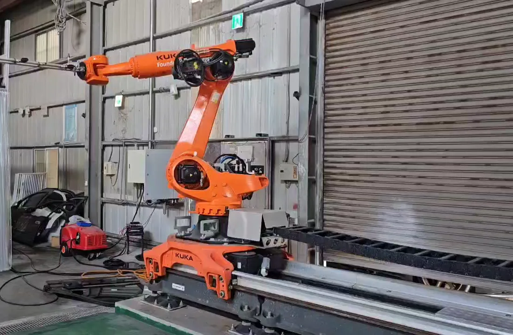
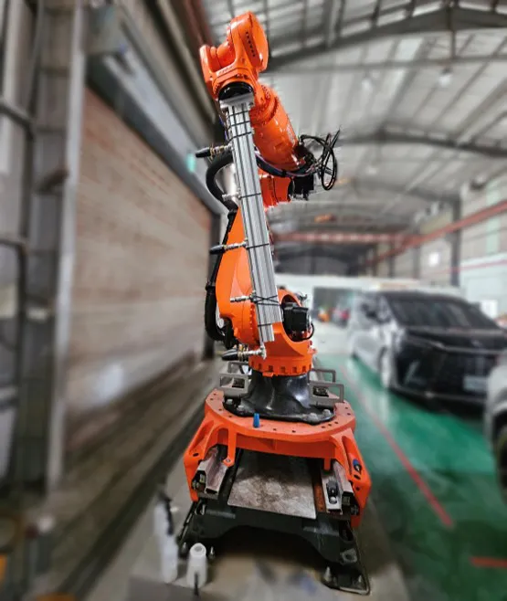
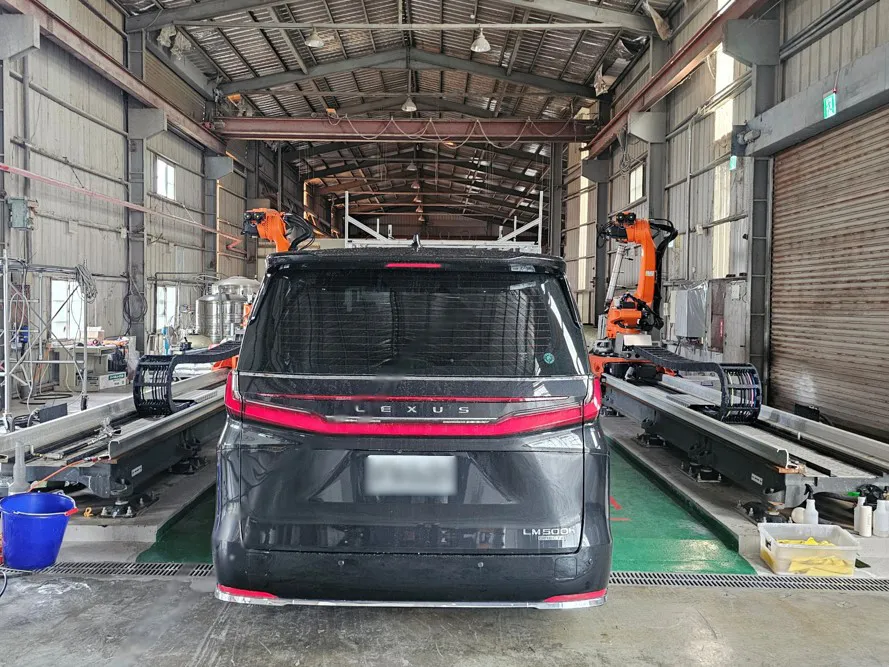
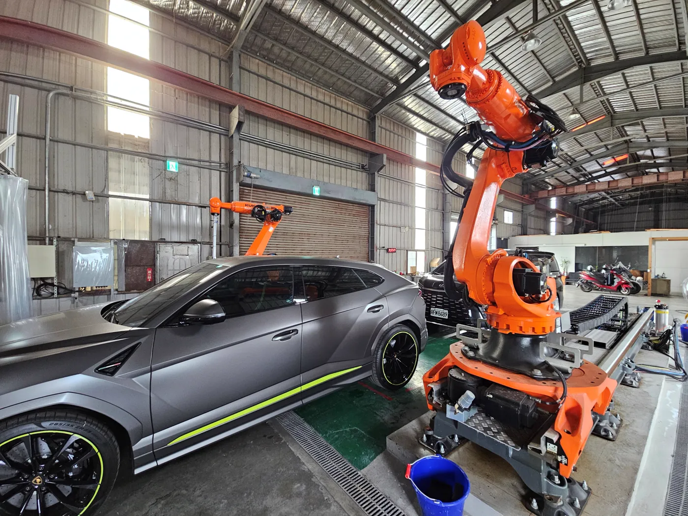
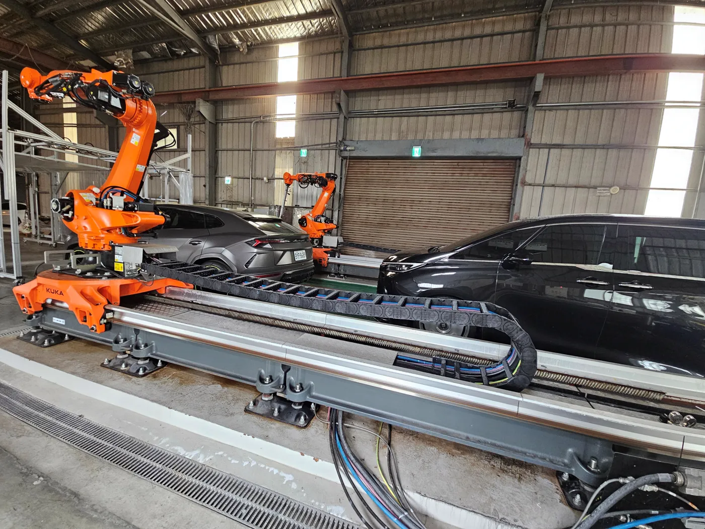
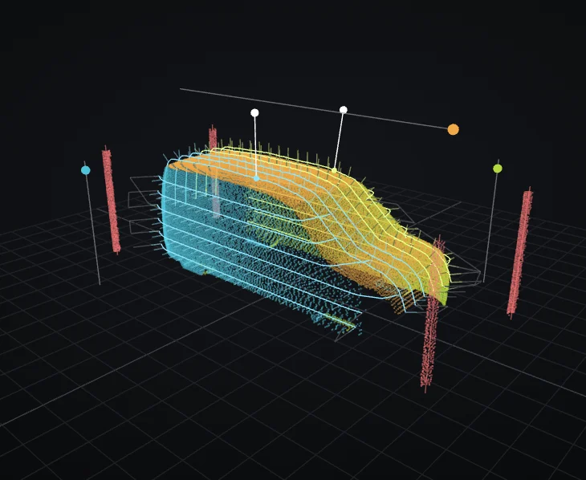
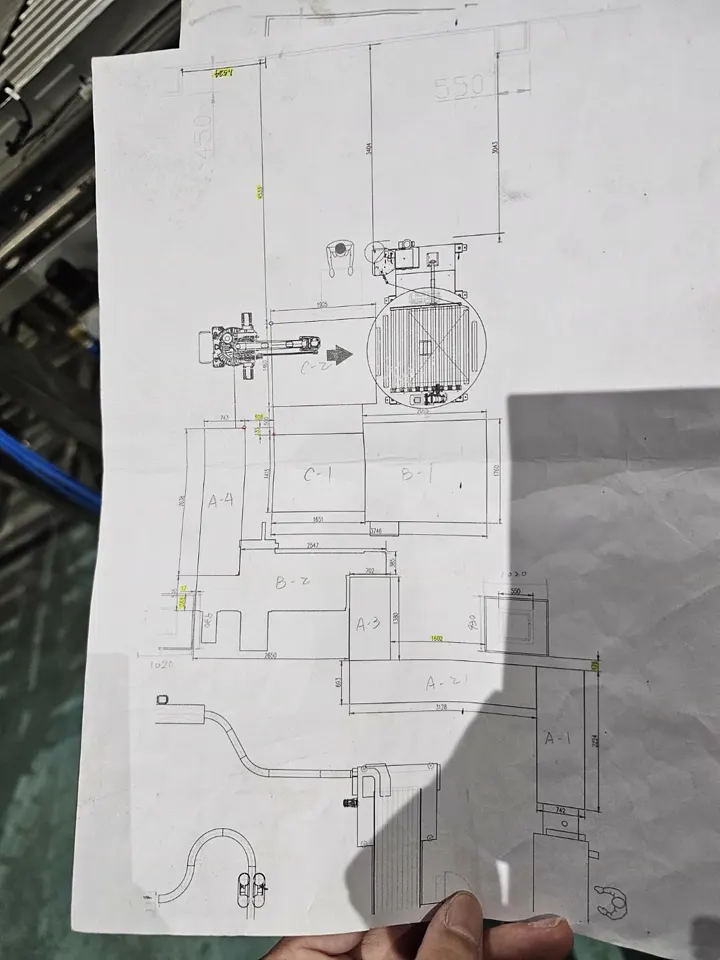
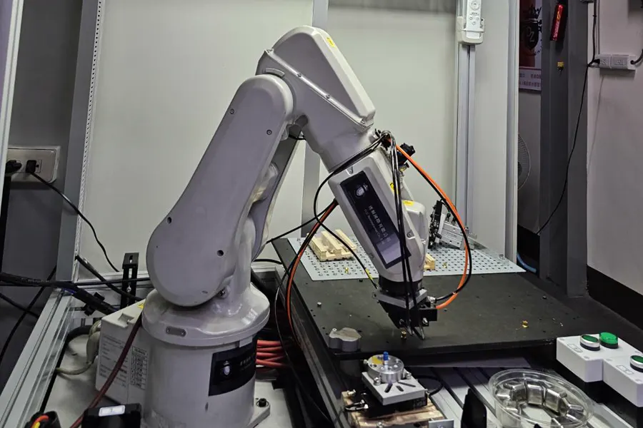

兩支手臂，沿著車身噴過去
機械手臂洗車系統的手臂端：工具條件、路徑規則與現場。
掃描端算出來的點雲，最後是要給這兩支手臂用的。這一頁整理手臂端的條件，因為它們決定了掃描端必須輸出什麼：不只是點的位置，還要有噴槍的方向，以及手臂走得到、走得順的順序。

手臂端的三個條件
這三件事在一開始就定下來，後面所有的計算都繞著它們。
左右各一支手臂
車停在中間，兩支六軸手臂分別架在車的左右兩側的地軌上，可以沿著車長方向移動。一支手臂顧不到另一側，所以一定是兩支分工。
噴塗工具長 1000 mm
工具是一支長桿，TCP 設在法蘭前方 1000 mm。好處是手臂本體可以離車身遠一點，壞處是姿態只要差一點角度，桿子尾端就會掃出很大一段距離，所以每個點的方向都要算準。
以車體中線對稱切半
噴塗範圍以車體中線為界，左手臂負責左半邊，右手臂負責右半邊。車頂與引擎蓋各走到中線為止，兩支手臂不會進到對方的空間。

現場
示範車是一台七人座的廂型車，車身高、側面又直又大片，對手臂的可達範圍是不小的考驗。



為什麼掃描一定要準
每一台車的長寬高與曲面都不同，手臂沒辦法靠一套教好的固定點位洗所有的車。先掃出這台車的輪廓，再依輪廓當場算路徑，才有辦法換車不換程式。
反過來說，掃描只要差幾公分，一公尺長的工具就可能碰到車。所以掃描端除了算點雲，也做了點選量測的功能，用來對照實物尺寸。
點雲怎麼變成手臂的路徑
下圖是點雲模擬器算出來的結果：彩色的點是三顆雷射掃到的車體，淺色的線是兩支手臂的噴塗路徑，短線是每個位置的工具方向。

- 先整併，再算方向。沿輪廓把點每 5 cm 整併成一個，把雜訊平均掉。
- 兩點決定姿態。一個點只有位置。同一個切面上相鄰兩點連成切線，轉 90° 得到法線，工具沿法線對準車身，斜面也能平行噴。
- 退縮 5 到 10 cm。TCP 不貼著車身，沿法線往外退，留出噴塗距離。
- 順序是車頭、車頂、車尾、側面。沿車長方向一趟翻過去，路徑連續，手臂不用反覆大幅改變姿態。
- 每趟前後預退 500 mm。先沿法線退開，再移到下一趟的起點。
- 守住工具下限。車頭最低點附近，工具座標還要能與法蘭面保持平行，低於下限的點不排進路徑。
路徑匯出的格式是每個姿態一列：TCP 位置、工具方向、法蘭位置。模擬器裡可以直接下載成 CSV。
其他手臂實作紀錄
洗車系統之外的手臂現場照片與影片：開箱試機、現場配置規劃、取放與堆疊測試。




影片


影片放在 Google 雲端硬碟，按下播放才會載入。